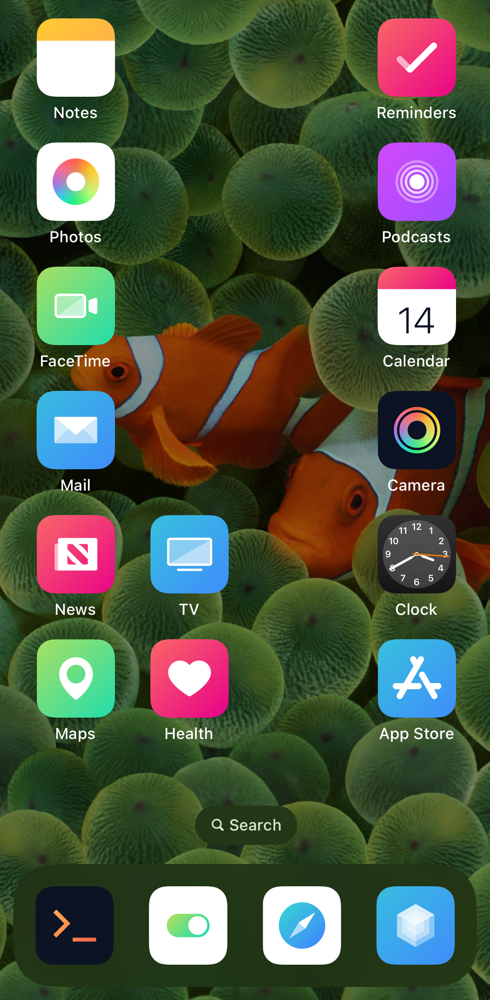
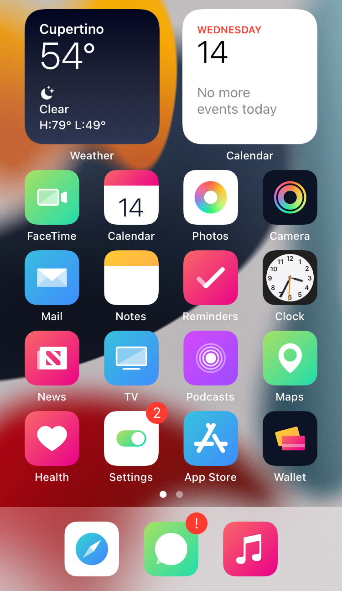
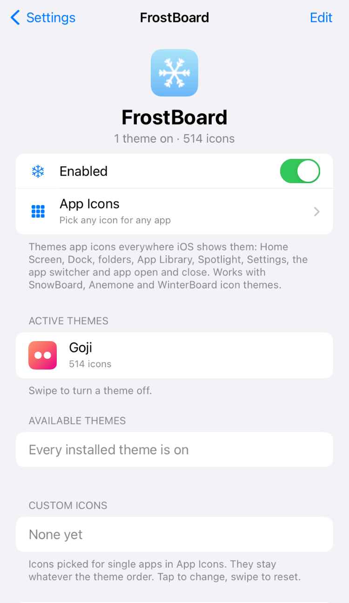
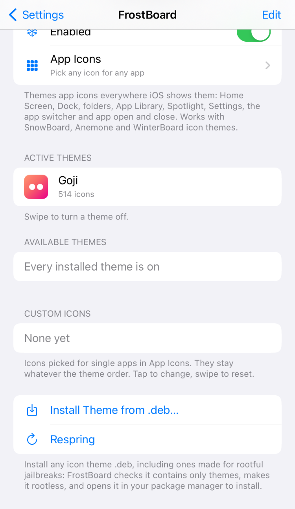

← John's Repo
FrostBoard
Icon theming for iOS 15 and later, made because SnowBoard hasn't been updated for iOS 18 and newer yet. FrostBoard uses the icon themes you already have (SnowBoard, Anemone and WinterBoard themes) and doesn't need any of those theme managers installed.
- Icons everywhere iOS draws them: Home Screen, Dock, folders, App Library, Spotlight, Settings, the share sheet, the app switcher and app open / close.
- CarPlay app icons too.
- Circle icons: Icon Shape → Circle rounds every app icon, themed or not.
- Live Clock and Calendar icons from your theme, with moving hands and today's date.
- Pick any icon for any app: choose from every icon in every installed theme, including alternates and themes that are off, or keep Apple's icon.
- Theme order: turn themes on and off and drag them into order; the higher theme wins.
- Install Theme from .deb: install any icon theme package, even ones made only for rootful jailbreaks. FrostBoard checks it's only themes, makes it rootless and opens it in your package manager.
- Changes apply live, no respring needed.




What's New in 0.0.1~beta5
- Fixed on iOS 18: with Icon Shape: Circle, apps your theme doesn't cover could stay as blank placeholder icons. They now show their real icon, cut to a circle.
- beta4: folders keep their normal shape in circle mode, and changing Icon Shape offers a respring.
- beta3 added circle icons (Settings → FrostBoard → Icon Shape) and CarPlay icons (iOS 16 and later; please report back how it looks in your car).
Installing Themes
- Themes that depend on SnowBoard, Anemone, WinterBoard, NeonBoard or iThemer install straight from your package manager: FrostBoard stands in for them.
- Old rootful-only themes: download the .deb, then Settings → FrostBoard → Install Theme from .deb…
- Turn new themes on under Available Themes.
Device Support
- iOS 15 and later, rootless. iOS 26: untested, you are welcome to try it and report back. Tested on an iPhone 7 (A10) with iOS 15.8.6, an iPhone 11 Pro Max (A13) with iOS 16.2, an iPhone SE (2nd gen, A13) with iOS 17.5.1 and an iPhone 11 Pro (A13) with iOS 18.6.2.
- Built for arm64 and arm64e.
- If it ever puts you into safe mode: open Sileo (safe mode still allows it), uninstall it and please report back.
Notes
- Icons only. FrostBoard themes app icons (and Settings icons). Status bar, badge and keyboard images from themes aren't applied.
- Uninstall SnowBoard before installing FrostBoard: on iOS 18 SnowBoard crashes SpringBoard on its own, and the two would theme the same icons.
- This is a beta: please report icons that stay stock or look wrong.
Credits
Original work by John d_ie. Works with themes made for SnowBoard (SparkDev), Anemone and WinterBoard (saurik): thank you to their authors and to every theme designer.